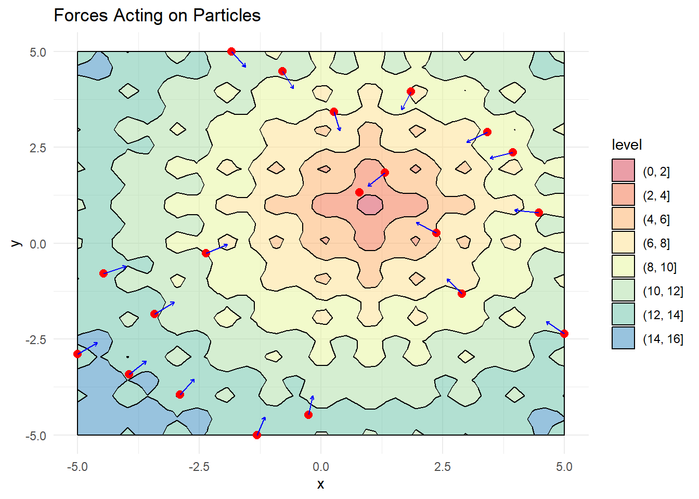
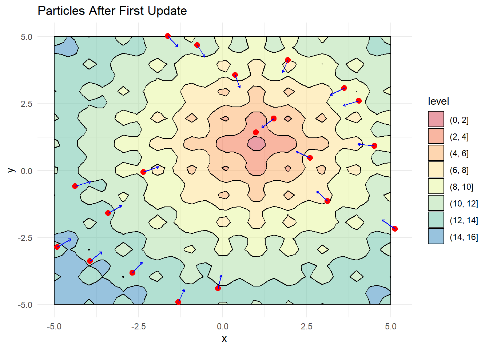

# Load required packages
library(dplyr) # For data manipulation
library(ggplot2) # For visualization
library(gganimate) # For animations
library(metR) # For geom_arrowBuilding a Particle Swarm Optimizer from Scratch in R
R
Optimization
Visualization
Nature-inspired algorithms can solve complex optimization problems with surprising efficiency. This post shows you how to build a Particle Swarm Optimizer (PSO) from scratch in R – mimicking how birds flock or fish school to efficiently search for food.
Required Libraries
The Challenge: A Complex Optimization Surface
We’ll test our optimizer on Ackley’s function – a challenging benchmark with many local minima that can trap optimization algorithms:
obj_func <- function(x, y){
# Modified Ackley function with global minimum at (1,1)
-20 * exp(-0.2 * sqrt(0.5 *((x-1)^2 + (y-1)^2))) -
exp(0.5*(cos(2*pi*x) + cos(2*pi*y))) + exp(1) + 20
}
# Create a visualization grid
x <- seq(-5, 5, length.out = 50)
y <- seq(-5, 5, length.out = 50)
grid <- expand.grid(x, y, stringsAsFactors = FALSE)
grid$z <- obj_func(grid[,1], grid[,2])
# Create a contour plot
contour_plot <- ggplot(grid, aes(x = Var1, y = Var2)) +
geom_contour_filled(aes(z = z), color = "black", alpha = 0.5) +
scale_fill_brewer(palette = "Spectral") +
theme_minimal() +
labs(x = "x", y = "y", title = "Ackley's Function")
contour_plot
How PSO Works
PSO mimics how birds find food by combining individual memory with social information:
- Scatter random “particles” across the search space
- Each particle remembers its personal best position
- The swarm shares information about the global best position
- Particles adjust their movement based on both personal and swarm knowledge
The movement equation balances three forces:
\[v_{new} = w \cdot v_{current} + c_1 \cdot r_1 \cdot (p_{best} - p_{current}) + c_2 \cdot r_2 \cdot (g_{best} - p_{current})\]
Where: - w: Inertia weight (momentum) - c1: Personal influence (memory) - c2: Social influence (cooperation) - r1,r2: Random values adding exploration
Building PSO Step by Step
Step 1: Initialize the Swarm
First, we create a random swarm of particles and place them across our search space:
# Set parameters
n_particles <- 20
w <- 0.5 # Inertia weight
c1 <- 0.05 # Personal learning rate
c2 <- 0.1 # Social learning rate
# Create random particle positions
x_range <- seq(-5, 5, length.out = 20)
y_range <- seq(-5, 5, length.out = 20)
X <- data.frame(
x = sample(x_range, n_particles, replace = FALSE),
y = sample(y_range, n_particles, replace = FALSE)
)
# Visualize initial positions
contour_plot +
geom_point(data = X, aes(x, y), color = "red", size = 2.5) +
labs(title = "Initial Particle Positions")Step 2: Track Best Positions and Initialize Velocities
Next, we track each particle’s personal best position and the swarm’s global best position:
# Initialize random velocities
dX <- matrix(runif(n_particles * 2), ncol = 2) * w
# Set initial personal best positions
pbest <- X
pbest_obj <- obj_func(X[,1], X[,2])
# Find global best position
gbest <- pbest[which.min(pbest_obj),]
gbest_obj <- min(pbest_obj)
# Visualize with arrows showing pull toward global best
X_dir <- X %>%
mutate(g_x = gbest[1,1],
g_y = gbest[1,2],
angle = atan((g_y - y)/(g_x - x))*180/pi,
angle = ifelse(g_x < x, 180 + angle, angle))
contour_plot +
geom_point(data = X, aes(x, y), color = "red", size = 2.5) +
geom_segment(data = X_dir,
aes(x = x, y = y,
xend = x + 0.5*cos(angle*pi/180),
yend = y + 0.5*sin(angle*pi/180)),
arrow = arrow(length = unit(0.1, "cm")),
color = "blue") +
labs(title = "Forces Acting on Particles")
Step 3: Update Particle Positions
Now we update each particle’s position based on its velocity and the forces acting on it:
# Calculate new velocities using PSO equation
dX <- w * dX +
c1*runif(1)*(pbest - X) +
c2*runif(1)*(as.matrix(gbest) - X)
# Update positions
X <- X + dX
# Evaluate function at new positions
obj <- obj_func(X[,1], X[,2])
# Update personal best positions if improved
idx <- which(obj <= pbest_obj)
pbest[idx,] <- X[idx,]
pbest_obj[idx] <- obj[idx]
# Update global best position
idx <- which.min(pbest_obj)
gbest <- pbest[idx,]
gbest_obj <- min(pbest_obj)
# Visualize updated positions
X_dir <- X %>%
mutate(g_x = gbest[1,1],
g_y = gbest[1,2],
angle = atan((g_y - y)/(g_x - x))*180/pi,
angle = ifelse(g_x < x, 180 + angle, angle))
contour_plot +
geom_point(data = X, aes(x, y), color = "red", size = 2.5) +
geom_segment(data = X_dir,
aes(x = x, y = y,
xend = x + 0.5*cos(angle*pi/180),
yend = y + 0.5*sin(angle*pi/180)),
arrow = arrow(length = unit(0.1, "cm")),
color = "blue") +
labs(title = "Particles After First Update")
Complete PSO Implementation
Now let’s package everything into a reusable function:
pso_optim <- function(obj_func, # Function to minimize
c1 = 0.05, # Personal learning rate
c2 = 0.05, # Social learning rate
w = 0.8, # Inertia weight
n_particles = 20, # Swarm size
init_fact = 0.1, # Initial velocity factor
n_iter = 50 # Maximum iterations
){
# Define search domain
x <- seq(-5, 5, length.out = 100)
y <- seq(-5, 5, length.out = 100)
# Initialize particles
X <- cbind(sample(x, n_particles, replace = FALSE),
sample(y, n_particles, replace = FALSE))
dX <- matrix(runif(n_particles * 2) * init_fact, ncol = 2)
# Initialize best positions
pbest <- X
pbest_obj <- obj_func(x = X[,1], y = X[,2])
gbest <- pbest[which.min(pbest_obj),]
gbest_obj <- min(pbest_obj)
# Store positions for visualization
loc_df <- data.frame(X, iter = 0)
iter <- 1
# Main optimization loop
while(iter < n_iter){
# Update velocities
dX <- w * dX +
c1*runif(1)*(pbest - X) +
c2*runif(1)*t(gbest - t(X))
# Update positions
X <- X + dX
# Evaluate and update best positions
obj <- obj_func(x = X[,1], y = X[,2])
idx <- which(obj <= pbest_obj)
pbest[idx,] <- X[idx,]
pbest_obj[idx] <- obj[idx]
# Update global best
idx <- which.min(pbest_obj)
gbest <- pbest[idx,]
gbest_obj <- min(pbest_obj)
# Store for visualization
iter <- iter + 1
loc_df <- rbind(loc_df, data.frame(X, iter = iter))
}
return(list(X = loc_df,
obj = gbest_obj,
obj_loc = paste0(gbest, collapse = ",")))
}Let’s test our optimizer on the Ackley function:
# Run the PSO algorithm
out <- pso_optim(obj_func,
c1 = 0.01, # Low personal influence
c2 = 0.05, # Moderate social influence
w = 0.5, # Medium inertia
n_particles = 50,
init_fact = 0.1,
n_iter = 200)
# Check the result (global minimum should be at (1,1))
out$obj_loc[1] "1.0000238436846,0.999984789266684"Visualizing the Swarm in Action
The real beauty of PSO is watching the particles converge on the solution:
# Create animation of the optimization process
ggplot(out$X) +
geom_contour(data = grid, aes(x = Var1, y = Var2, z = z), color = "black") +
geom_point(aes(X1, X2)) +
labs(x = "X", y = "Y") +
transition_time(iter) +
ease_aes("linear")
Fine-Tuning Your Swarm
The PSO algorithm’s behavior can be dramatically altered by adjusting three key parameters:
- Inertia Weight (w)
- High values (>0.8): Particles maintain momentum and explore widely
- Low values (<0.4): Particles slow down and focus on refining solutions
- Personal Learning Rate (c1)
- High values: Particles favor their own discoveries
- Low values: Particles ignore their history
- Social Learning Rate (c2)
- High values: Particles rush toward the global best
- Low values: Particles explore independently
Common parameter combinations: - Exploration focus: High w (0.9), balanced c1/c2 (0.5/0.5) - Exploitation focus: Low w (0.4), higher c2 than c1 (0.1/0.7)
Enhancing Your PSO Implementation
For real-world applications, consider these improvements:
- Add boundary constraints to keep particles within valid regions
- Implement adaptive parameters that change during optimization
- Add convergence-based stopping criteria
- Extend to higher dimensions for more complex problems
The R package pso offers a production-ready implementation!